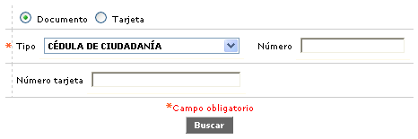
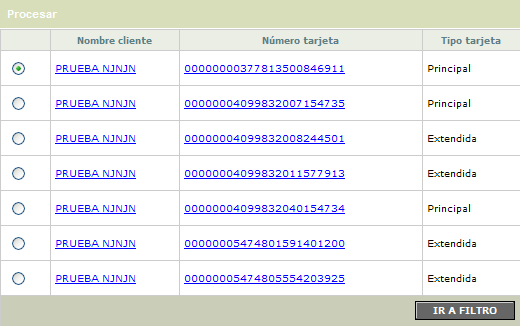
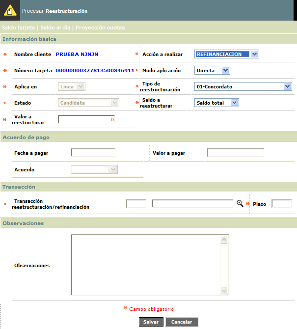
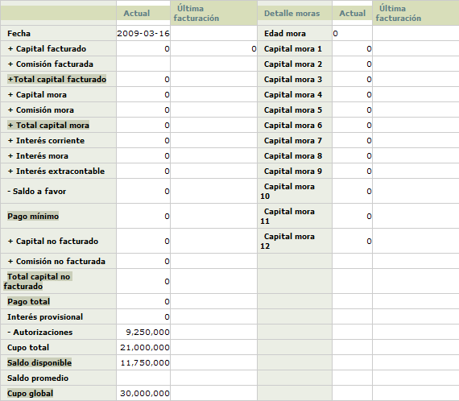
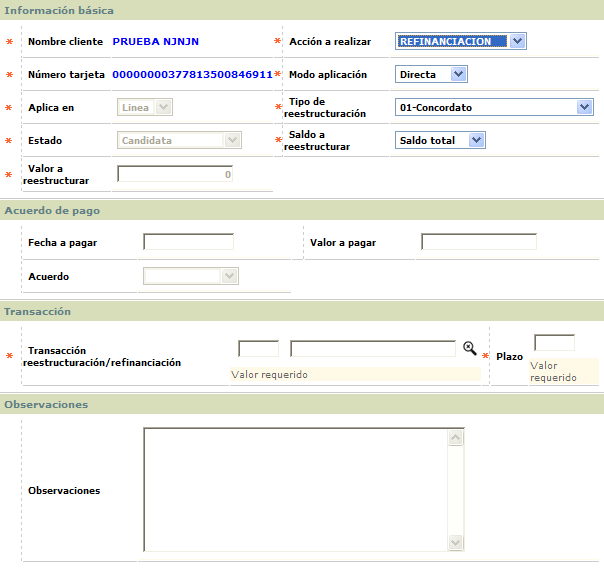

Reestructuraciones |
Mediante esta función se registran aquellos clientes que a través del proceso de reestructuración o refinanciación intentan normalizar su crédito. De acuerdo con el perfil del funcionario, el usuario podrá realizar reestructuraciones o refinanciaciones directas a partir de esta forma, sin tener en cuenta las validaciones que efectuaría el aplicativo sobre un perfil de funcionario corriente. La reestructuración implica la creación de un nuevo número de obligación, mientras que la refinanciación no involucra nuevo crédito. La opción ofrece la opción de efectuar el proceso de reestructuración o refinanciación en forma directa, o la formalización de un acuerdo de pago, de manera que cuando éste sea realizado, se permita la refinanciación o reestructuración.
El formulario cuenta con un filtro de búsqueda y la opción Procesar en la parte superior.
Filtro: Se pueden realizar consultas a través de las siguientes opciones. El usuario debe seleccionar si el filtro aplica por el Documento o por la Tarjeta.

Tipo |
Cuando se ingresa a la opción, se despliega un filtro inicial en el que se selecciona de la lista de valores el tipo de documento de identificación. |
Número |
Este campo opcional acepta cualquier dato alfanumérico de máximo deciseis caracteres. |
Número tarjeta |
En este campo se captura el número de tarjeta del cliente a quien se desea consultar, acepta máximo 23 caracteres. |
Una vez aplicado el filtro, el sistema muestra el siguiente formulario, a través del cual se puede acceder a la consulta del cliente y de la tarjeta.

Procesar: Si el usuario invoca la opción Procesar se despliega un formulario con los siguientes campos. Adicionalmente, cuenta con las opciones Saldo tarjeta, Saldo al d�a, y Proyecci�n cuotas.

Cliente |
Corresponde al nombre del cliente titular del producto. |
Acción a realizar |
Se determina la acción a realizar (Reestructurar o Refinanciar) para que el sistema verifique y presente a continuación la información del cliente al cual se le va a aplicar el procedimiento. |
Tarjeta |
Luego de capturados el tipo y número de identificación, en este campo se presenta el número de la tarjeta asociado a dicha identificación. |
Modo aplicación |
La forma ofrece la opción de efectuar el proceso de reestructuración o refinanciación en forma directa, o la formalización de un acuerdo de pago, de manera que cuando éste sea realizado, se permita la refinanciación o reestructuración. |
Tarjeta refinancia |
En este campo se selecciona la tarjeta que consolida la reestructuración, es decir, aquella a la cual le será aplicada la reestructuración o refinanciación. El campo contiene lista de valores con todas las tarjetas que posee el cliente. |
Aplica en |
El
usuario selecciona si va a hacer la operación línea y
en tiempo real o en batch. |
Tipo reestructuración |
Campo con lista propia de valores que permite seleccionar la clase de reestructuración a efectuar. |
Estado |
Este campo informa acerca de la etapa en la cual se encuentra la tarjeta, dentro del proceso de reestructuración o refinanciación. De acuerdo con la lista de valores adjunta hay cuatro alternativas de selección: Solicitada, la cual corresponde al ingreso de la solicitud, cuando se llevan a cabo los acuerdos de pago; una vez el cliente cumple con el pago acordado, el estado del registro cambia a Candidata, en el proceso de actualización de saldos diario. También se puede actualizar manualmente el estado a Candidata, cuando se desea realizar la reestructuración o refinanciación en forma directa, sin necesidad de acuerdo de pago previo. Los otros estados posibles son: Denegada, el cual se registra cuando la entidad decida negar la solicitud; y Negada por no pago, en caso de que el cliente incumpla el acuerdo. |
Saldo a reestructurar |
Campo en el cual se selecciona el valor a reestructurar o refinanciar. Los valores posibles son: Saldo Total, cuando el monto a reestructurar o refinanciar corresponde al saldo total de la deuda; Pago Mínimo, en caso de que el valor a refinanciar sea equivalente al pago mínimo de la obligación; y Otro, cuando el valor a refinanciar no corresponde ni al pago mínimo ni al saldo total de la deuda, en cuyo caso el monto a refinanciar se debe digitar en el campo “Valor a reestructurar” de esta misma forma. Es importante resaltar que cuando el bloqueo es Reestructuración, únicamente aplica la opción Saldo Total, pues no es posible reestructurar valores diferentes al total de la deuda; las opciones Pago Mínimo y Otro solo son permitidas cuando el bloqueo es Refinanciación. |
Valor a reestructurar |
Despliega el valor del saldo total de la deuda o del pago mínimo, en caso de haber seleccionado las opciones Saldo Total o Pago Mínimo, respectivamente, en el campo anterior. El campo puede ser actualizado cuando la opción seleccionada en ese mismo campo es Otro, caso en el cual el usuario digita el valor a refinanciar. |
Fecha a pagar |
Campo en formato YYYY-MM-DD, en el que se ingresa la fecha en la cual el cliente debe hacer el pago pactado en el campo anterior. Es importante anotar que cuando se graba el acuerdo de pago, a través de la opción que la forma provee para este efecto, el estado del registro es Solicitada, y que el proceso de cierre diario evalúa si efectivamente se llevó a cabo el pago acordado, caso en el cual el estado cambia automáticamente a Candidata. Solamente las tarjetas que tengan este estado pueden ser refinanciadas o reestructuradas, ya sea manualmente, a través de la forma, o en el proceso batch que realiza el proceso automáticamente. |
Valor a pagar |
Campo en el cual se indica el valor que debe pagar el cliente, cuando se pretende formalizar un acuerdo de pago. |
Acuerdo |
Mediante una lista de valores adjunta la entidad selecciona la clase de convenio al que llega con el cliente para efectuar la reestructuración o refinanciación: Verbal, cuando el convenio lo efectúa el cliente sin Inter.-mediación de ningún documento para efectuar la reestructuración; Cheque, cuando para formalizar el acuerdo el cliente debe dejar un cheque como garantía de cumplimiento; y Reestructurar, que corresponde a la normalización del crédito sin requerimientos previos y por políticas de la entidad. En este último caso, la reestructuración o refinanciación se puede hacer en forma directa, sin esperar el cumplimiento de un compromiso de pago. |
Transacción compra |
El usuario debe ingresar la transacción compra a partir de una lista para el compromiso de pago. Es obligatorio. |
Plazo |
En este campo obligatorio se debe ingresar el plazo para el compromiso de pago. |
Observaciones |
Campo alfanumérico de máximo 2000 caracteres, no obligatorio, en el que se puede registrar cualquier tipo de información adicional o relevante con relación a la refinanciación, reestructuración o acuerdo de pago a efectuar. |
Saldo tarjeta : Si el usuario invoca esta opción, se despliega un nuevo formulario con la Consulta de la tarjeta a la cual se le está realizando la reestructuración.

Saldo día:
Si el usuario invoca la opción Saldo al día se despliega el
siguiente formulario:

Fecha a pagar |
Despliega en formato YYYY-MM-DD la fecha estimada en que se debe efectuar el pago. |
Capital facturado |
Indica la porción de los diferidos a ser cubierta mediante el pago propuesto. |
Capital mora |
Señala el monto acumulado de los diferidos no cubiertos en facturaciones anteriores. |
Interés corriente |
Muestra el valor resultante de la liquidación del beneficio esperado por la entidad sobre el saldo del capital vigente proyectado a la fecha de pago propuesta. |
Interés mora |
Despliega el monto resultante de la liquidación del beneficio adicional esperado por la entidad sobre el saldo del capital en mora proyectado a la fecha de pago propuesta. |
Ajuste interés mora |
Registra el valor del ajuste hecho a los intereses de mora y que afecta al pago total. |
Interés extracontable |
Campo de salida que muestra el monto resultante de la liquidación del beneficio esperado por la entidad sobre el saldo del capital cuya altura de mora supere los 90 días proyectado a la fecha de pago propuesta. |
Saldo a favor |
Presenta los valores que han excedido bien sea el pago mínimo o total acorde con los parámetros definidos en los Datos básicos de la opción Productos. |
Honorarios |
Indica, en caso de aplicar, el monto que por concepto de Honorarios deberá ser cubierto por el pago propuesto. |
Pago total |
Contiene la sumatoria de los anteriores conceptos y que deberá se cubierto por el pago propuesto. |
Saldo no facturado |
Despliega el saldo insoluto que reflejará la obligación si el pago propuesto se hace efectivo. |
Proyección
cuotas:
Cuota |
Muestra el número de cuotas en las cuales se va a dividir el pago del saldo a refinanciar. |
Saldo |
Indica para cada cuota, el saldo de capital pendiente. |
Valor capital |
Registra el valor por concepto de capital ( a pagar ) correspondiente a cada una de las cuotas de la refinanciación. |
Valor interés |
Señala el valor de los intereses respectivos calculados sobre el saldo y el valor cuota capital. |
Valor cuota |
Muestra el valor total a cancelar ( cuota capital más intereses) en cada una de las cuotas de la refinanciación. |
El formulario cuenta con dos botones adicionales para las siguientes funcionalidades:
|
Traslado saldo en dólares a moneda patrón: funcionalidad que posibilita el movimiento de saldos expresados en dólares a la moneda patrón de la entidad, en razón a que el sistema no permite refinanciación en dólares. |
|
Grabar negación: Este botón permite grabar un registro de la negación de la reestructuración. |